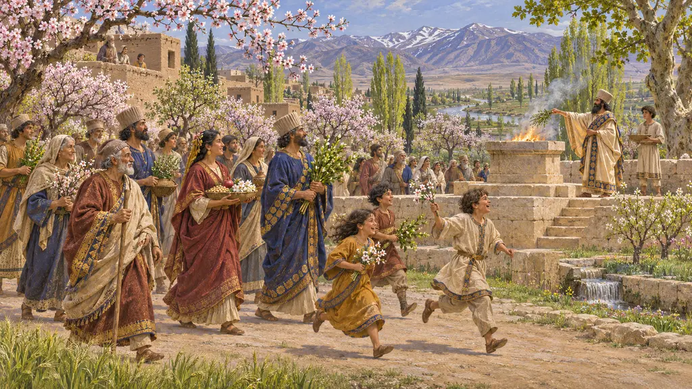
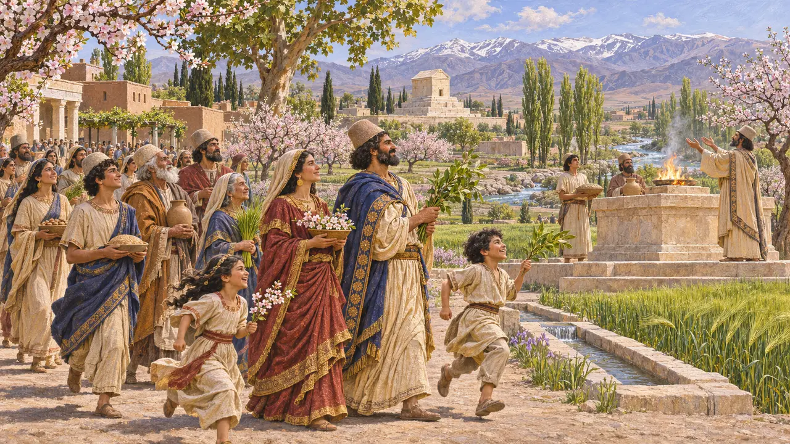
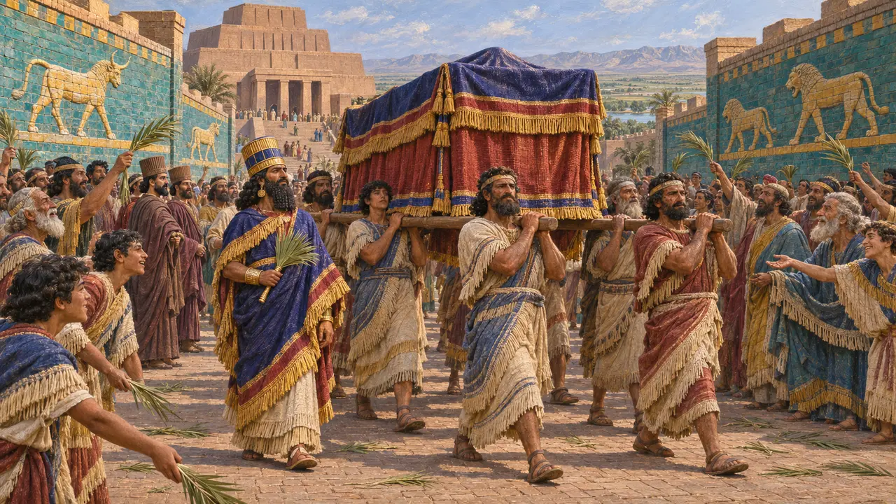

The spring new year
Nowruz, and what we can say about it
The Persian year did begin in spring, and so did the Babylonian one. No Achaemenid text names a feast of that day. Calling what you keep here Nowruz would claim more than anyone knows, so the game calls it the spring new year and tells you why.
游戏中： The spring new year comes on the first day of the year. Keep barley in store and the town processes. The tag on it says "disputed", and that's the truth.

The calendar
见于史载The Old Persian month names run from Adukanaisha, around March and April, and the Babylonian year opens with Nisannu. That the year started in spring is firm.
Behistun inscription; Persepolis Fortification tablets
The reliefs
争夺中The Apadana's stairs show the peoples of the empire bringing gifts, and many have read them as a New Year audience. Nylander, Calmeyer and Mousavi have denied any evidence for that. Iranica's own article on Nowruz says there's no precise information on its customs before the Sasanians.
Iranica, "Persepolis", "Nowruz i"; Nylander 1974; Calmeyer 1980

来源
- Encyclopaedia Iranica, "Nowruz i"
- Encyclopaedia Iranica, "Persepolis"
- Nylander 1974
- Calmeyer 1980